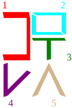

Blocks
In Hangul, letters come together, and form syllable blocks. Rarely are there blocks composed of multiple syllables. In Lojban, syllables are formed around vowel sounds, often surrounded by consonants or consonant pair. Gismu, the core to Lojban vocabulary, are all composed of 5 letters, or 2 syllables. Thus, gismu exist in either CCVCV or CVCCV. Rafsi (abbreviated gismu affixes) are a single syllable that exist as either CVC, CCV, or CVV forms.
Valbli word-blocks do not represent syllables, and instead represent the parts of Lojbanic speach. cmavo, gismu and rafis are all represented by a single glyph. Compound cmavo will need to be composed of multiple cmavo glyphs. Lujvo (Compound gismu) also require multiple CVC, CVV or CCV glyphs.
These limitations are in consideration of Unicode standardization. As a result fu'ivla (Lojbanic loan words) and cmene (names) as well as other such words need to be written with individual glyphs, like any other alphabet.
The tables below would represent a couple block formats.
╔════════════╦════════════╗ ╔════════╦════════╦════════╗ ║ ║ ║ ║ ║ ║ ║ ║ 1 ║ 2 ║ ║ 1 ║ 2 ║ 3 ║ ║ ║ ║ ║ ║ ║ ║ ╚════════════╩════════════╝ ╚════════╩════════╩════════╝
These two formats represent either CV, .VV, CCV or CVV cmavo blocks. It should be noted that Lojban does not treat the unvoiced glottal spirant (') as a vowel nor consonant, and instead acts more as a seperator for vowels that aren't allowed together otherwise. In Valbli, the unvoiced glottal spirant is a simple vertical line, and may be inserted BETWEEN the given positions. Thus, the . and ' are not represented in these formats, even though any block beginning with a vowel will have a above it.
However, these aren't the only positions letters may take. If the starting consonant of a syllable is a Stop or a Nazal consonant, the letter stretches horizontally to fill the row, and pushes the rest of the syllable below it.
╔═════════════════════════╗ ╔═════════════════════════╗ ║ 1 ║ ║ 1 ║ ╠═════════════════════════╣ ╠════════════╦════════════╣ ║ 2 ║ ║ 2 ║ 3 ║ ╚═════════════════════════╝ ╚════════════╩════════════╝
And if the starting or ending consonant is a Fricative or Sibilant cosonant, the letter stretches vertically, forcing the rest of the syllable to be stacked next to it.
╔════════════╦════════════╗ ║ ║ 2 ║ ║ 1 ╠════════════╣ ║ ║ 3 ║ ╚════════════╩════════════╝
The glyph to the right represents the gismu, "sutra" (fast), with every letter color-coded and the reading order labled. The word-block is composed of two syllables stacked on top of each other, with the top one being read first. Each syllable is read with the top-left most letter first, in the order shown in the tables above. In the case of "sutra", the first syllable is "sut". The first letter, "s" is a Sibilant, and thus it stretches vertically, pushing the rest of the syllable to its side. As a result, "u" and "t" are read from top to bottom. In the case of "ra", the only consonant "r" does not modify itself under any circumstant, and thus both letters fill the syllable block horizontally.
Note that the syllabification of CCVCV gismu will always break into {CCV},{CV}, however CVCCV gismu can be broken into {CVC},{CV} or {CV},{CCV} blocks. In writing you can alternate between the two styles, though font files will need to use one or the other. For the Sefta font I opted to use the {CVC},{CV} style, but other implementations can alternate. Consider it artistic licensing.
Valbli's writing direction could be either top-to-bottom or left-to-right. Either mode has its benefits, and in either instance, however you may have to delimeter glyphs with a space because of instances where syllables may run together.
Can you read what the sentence below says?

Always keep in mind that the glottal stop (.) and glottal spirant (') do not completely act as letters in Valbli, much like they are not treated as phenomes of their own in Lojban phonlogy. For this reason, neither of these letters truly fit into the tables above. A . will never be inserted mid-word, and thus the only place it can be placed is above and/or below a word block, and a ' will only appear between vowels. In that case, a ' can be placed between any vowel without changing the format of the syllable. If the two vowels in question are stacked vertically, then a horizontal line will be placed between them.
The table below illustrates this interaction.
 |
 | |
| rai | ra'i | |
|---|---|---|
 |
 |  |
| ta'a | fa'a | .fa'a |